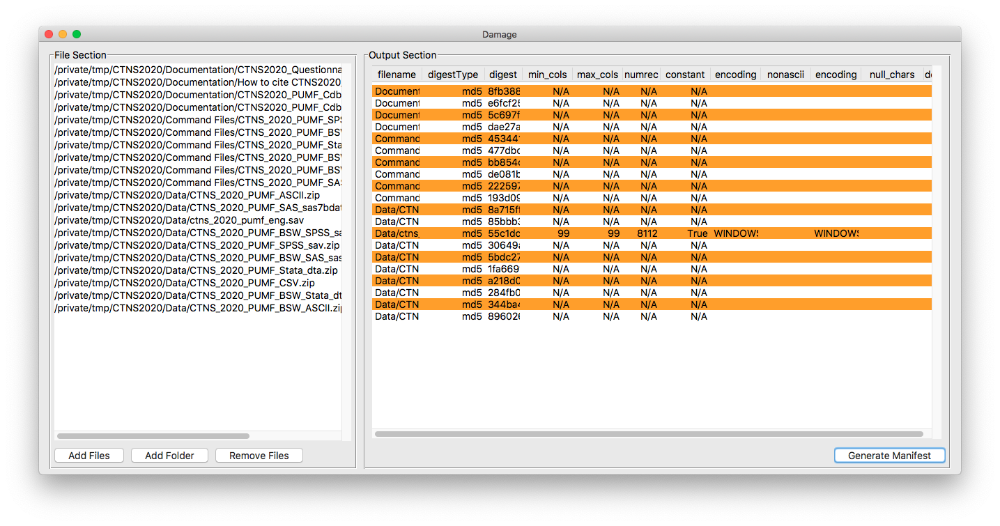

File manifest tools: Damage and FCheck¶
Overview¶
Damage (either DAtaMAnifestGEnerator or a wizard, your choice) is a simple multi-platform utility which creates file manifests in a variety of formats. It was created to deal primarily with statistical data, but it also functions as a generalized file manifest tool.
Multiple flavours!¶

Damage comes as both a traditional application (with a handy user interface) or as console utility running in your Windows command prompt/PowerShell/bash session.
Download the newest binary version of Damage here:
A created manifest includes, for all file types:
- The file name
- Checksum in your choice of hash for the file. Current flavours of hashes are: sha1, sha224, sha256, sha384, sha512, blake2b, blake2s, md5
- Encoding, if available (ie, utf-8, windows-1252, etc.)
For plain text files, often used for microdata, the utility also produces information on:
- Minimum line length
- Maximum line length
- Number of records
- Constant records flag (ie, all lines are of the same length)
- Row and column of non-ASCII characters
- A count of null characters
- Flag for DOS/Windows formatting (ie, carriage return + line feed as opposed to just a line feed).
For files in SAS, SPSS and Stata formats (ie, .sas7bdat, .sav and .dta) the utility will provide information on:
- Number of cases (reported as rows)
- Number of variables (reported as columns)
Note that statistical package files will always be reported as rectangular due to the limitations of parsing them.
Output formats are:
- Plain text
- Comma Separated Value (ie, a spreadsheet)
- JSON. This JSON doesn’t conform to any particular standard, but is valid JSON object — one object for all the files. The command line program will produce output in the format of:
{"files":[{file1medata}, {file2metadata}, ...{fileNmetadata}]}
But that’s not all!¶
The fcheck module¶
While damage is the standalone piece of software that most people will use, the underlying checking mechanism is available as a Python module called fcheck which you can use in your own software.
Why would I need this?¶
More than ever, the world today revolves around data sharing. Knowing the data that you’ve downloaded is correct is key.
For data distributors
- damage output can be included as a text file with your data so that you and end users can verify and identify what they’ve downloaded
- Create detailed version notes with one command
- Manage changes in file structure using digests which are unique to a particular version of a file, instead of relying on easily changeable file names
- Easily find duplicate files
For researchers
- damage and fcheck can help with creating descriptive documentation which is required for your research data deposit
- damage output ensures the integrity of your data set when used by others
Detailed software/installation instructions¶
GUI application¶
Use the download button above to download the GUI application. On Windows and Linux, you need only unzip it and run it from wherever you like. On a Mac, double-click the .dmg file and drag the icon to the Applications folder.
Console binary files¶
Console binaries of the damage utility are available for Windows and Mac and Linux for Intel processors at fcheck’s release page https://github.com/ubc-library-rc/fcheck/releases. If you don’t already have Python 3 installed (and potentially other python libraries) or you just don’t want to use Python this is the easiest way to proceed.
These files don’t need installation and can be run directly from the command line. For ease of use, you might consider adding the files to your PATH. Note that the console binary and the GUI application are called damage and Damage, respectively. This makes a difference on a case-sensitive file system.
Important note
If you are using both the console binary and the windowed GUI application, you should be careful if both are in your system’s PATH, as this could potentially cause you unforeseen difficulties.
Windows users¶
The download should be in a directory that is listed in the %PATH% environment variable.
The easiest way to do this is to use the Start menu and type “Environment”, then select “Edit Environment variables for your account”. Either place the binary file into a directory listed in Path, or add a new directory to your path using the GUI.
Mac and Linux users¶
The easiest way to make this available system wide is simply to copy the executable to the /usr/local/bin directory, which is normally found on the primary drive. In the finder, press CMD-SHIFT-G, then type /usr/local/bin in the box to easily find it. If you don’t like those options, other common locations include, but are not limited to /opt/bin and ~/.local/bin.
Installing fcheck and the damage console utility with pip¶
The software is written in Python (>= 3.6), and the source is available as a single file in fcheck.py. If you have Python 3 installed you can either just download that single file to a place of convenience, or you can install it as a Python library by running the following commands in a terminal:
pip install git+https://github.com/ubc-library-rc/fcheck.git@master
This second method installs the damage command line utility and will also allow you to use the fcheck.Checker class in your own projects, in the traditional import fcheck sort of way. If you don’t care about that, just download a binary or use the Python file directly. It will also automatically install the dependencies for you.
Documentation on the module is available via the API reference documentation.
Updating with with pip¶
pip install --upgrade git+https://github.com/ubc-library-rc/fcheck.git@master
Because the software is not hosted at PyPi, there is a slightly longer update string.
Note that while the console binary is updated with pip, the GUI application is not.
Source code¶
As you may have surmised from the example above, source code is available at https://github.com/ubc-library-rc/fcheck, along with all of the documentation and binary files.